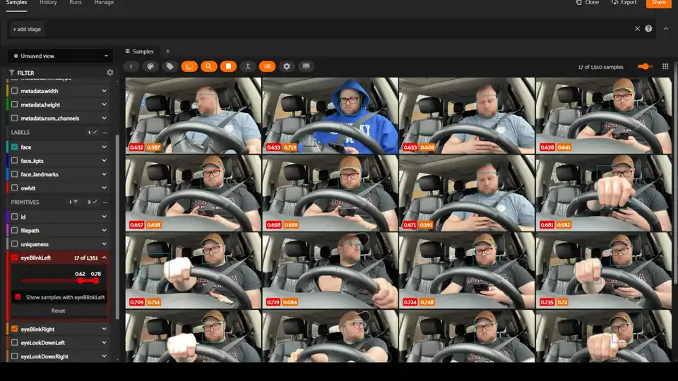
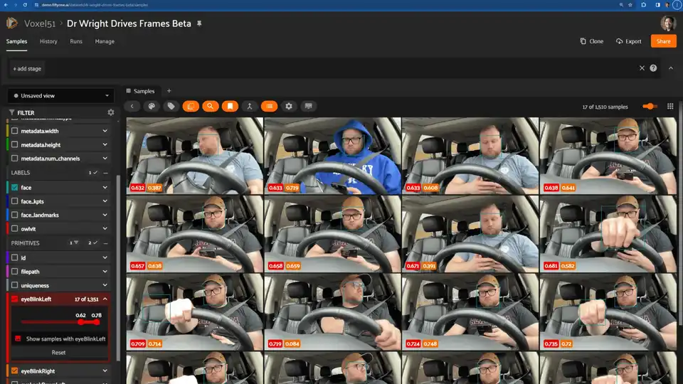

Voxel51 3.0: the physical-AI data platform grows an MCP agent, four layers of provenance, and a free tier
Voxel51 launched version 3.0 on Thursday, an end-to-end data platform for physical AI that unifies search, curation, annotation, and evaluation — headlined by an agent armed with 45+ MCP tools, agentic VLM labeling, and free self-service that replaces the old talk-to-sales gate.
- Voxel51 Agent operates across the physical-AI data loop — searching, curating, labeling, evaluating — with 45+ MCP tools, 80-plus built-in operators, and 18 open-source skills; it can write code to add new functionality.
- The agent is built on the Model Context Protocol and connects to 100+ model providers (Anthropic, OpenAI, Google); pre-launch benchmarks showed cost differences of up to 15x running the same tasks across Claude Sonnet 5, Claude Opus 5, GPT-5.1, and Gemini 3.1 Pro.
- Provenance at four levels: deployment-level activity log, dataset-level activity log, sample-level edit history, and immutable dataset-versioning snapshots.
- New: first-class multimodal time-series support, with multiple sensor streams on one timeline and segment-level embeddings to retrieve specific moments inside long recordings.
- Free self-service tier at app.voxel51.com replaces the old talk-to-sales gate; FiftyOne Enterprise rebrands to Voxel51, with FiftyOne continuing as the open-source project.
- Named customers: Berkshire Grey, Ford, Porsche, Precision Planting; new Nebius partnership with nine Physical AI Workshops across Canada and the US through November 2026.
The announcement
Voxel51 announced version 3.0 on Thursday via a PR Newswire release out of San Francisco: a major expansion of its platform for building and managing physical-AI datasets. The pitch is that the next wave of AI is leaving the internet for the physical world — robotics, autonomous systems, perception models — and the bottleneck isn’t model weights anymore, it’s the data work around them.
Co-founder and CEO Brian Moore called it the company’s “most significant release yet,” and the launch quietly retires a brand: the enterprise product, formerly FiftyOne Enterprise, is now just Voxel51, while FiftyOne continues as the open-source project. Teams can now try the platform on their own data for free at app.voxel51.com — previously, getting at the enterprise capabilities meant a sales conversation first.
An agent that works the data loop
The headline capability is Voxel51 Agent, an AI agent that operates across the physical-AI data loop — searching, curating, labeling, evaluating — and chains actions into repeatable workflows. It draws on more than 45 MCP tools, 80-plus built-in operators, and 18 open-source skills. It can write code to add new functionality, and every workflow inherits the organization’s permissions, security, and governance controls.
Voxel51 built the agent on the Model Context Protocol and says it connects to more than 100 model providers — Anthropic, OpenAI, and Google among them — with deployments spanning cloud, hybrid, on-premises, air-gapped, and managed setups. One striking data point from the company’s pre-launch benchmarking: running the same agent tasks across Claude Sonnet 5, Claude Opus 5, GPT-5.1, and Gemini 3.1 Pro produced cost differences of up to 15x — which is presumably why the platform is deliberately model-agnostic rather than tied to one provider’s stack.
“Physical AI teams don’t need another chat interface sitting on top of their data,” said product manager Adonai Vera. “They need an agent that can maintain context across the model development lifecycle and orchestrate actions across the full data flywheel.”

Search, annotation, and the time axis
Voxel51 Search is a persistent hybrid search index combining semantic retrieval with lexical queries and metadata filters — datasets get indexed automatically with embeddings computed from day one, and the vector retrieval layer runs on LanceDB’s columnar engine, separating storage from compute.
Annotation gets unified across 2D, 3D, video, and multimodal data, with automated QA, annotator metrics, and human-in-the-loop review. The Agentic Labeling feature uses vision-language models to generate labels from natural-language instructions and examples, with review workflows to validate the results before they land in a training set.
Also new: first-class multimodal time-series support. Multiple sensor streams render on the same timeline, and segment-level embeddings let teams retrieve specific moments inside long recordings instead of compressing a whole episode into a single embedding — the difference between finding “the three seconds the forklift crossed the frame” and scrolling through hours of footage.

Provenance and the free tier
Voxel51 3.0 adds data provenance at four levels: a deployment-level activity log, a dataset-level activity log, sample-level edit history, and immutable dataset-versioning snapshots — enough, the company says, to identify exactly what data went into a given model, reproduce workflows, and compare historical states. Under the hood, a fiftyone-mq event architecture handles job scheduling and activity tracking.
The customer list the company names — Berkshire Grey, Ford, Porsche, Precision Planting — tells you the market: teams building AI that operates in the physical world. And the company’s State of Physical AI 2026 survey supplies the thesis for the whole release: exceptional teams are roughly three times more likely than struggling teams to spend over half their project time on data work (58% versus 21%).
Two business-model moves matter here. First, the free self-service tier at app.voxel51.com removes the sales gate that historically stood in front of the enterprise features. Second, a new partnership with Nebius pairs the platform with AI cloud infrastructure — the two companies are running hands-on workshops, including nine more Physical AI Workshops across Canada and the US through November 2026, where developers run Voxel51 workflows on Nebius AI Cloud. Evan Helda, Nebius’s head of Physical AI, put the shared bet simply: robotics teams need compute, cloud platform, and data infrastructure to turn every deployment, failure, and edge case into a faster next iteration.
Why it matters
The model layer keeps getting cheaper and more commoditized; the Voxel51 thesis is that the data layer is where physical-AI teams actually win or lose. A 15x cost spread between frontier models doing the same agent tasks makes the “bring your own models” architecture more than marketing — it’s the cost lever. And four levels of provenance stop being a nice-to-have the moment a regulator or a safety incident asks which exact frames trained the deployed model. The caveat, as with every platform launch: these are the vendor’s workflows on the vendor’s chosen examples. The agent’s real test is whether robotics teams adopt it for the unglamorous middle of the data flywheel — failure triage, edge-case curation, retraining — not just the demo.
Sources: Voxel51’s official announcement, via PR Newswire (Oct 15, 2026); Unite.ai’s coverage of the launch (Oct 15, 2026).